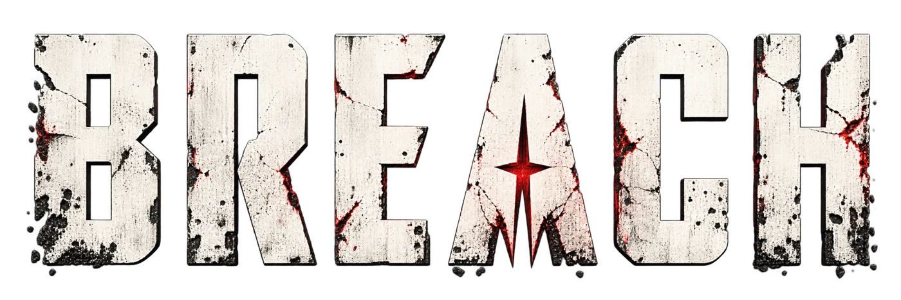

REALITY HAS FALLEN. TAKE BACK CONTROL.
01 // WORLD
NEW YORK, BROKEN OPEN.
A city fractured by impossible events. Explore unstable districts, shifting architecture,
and hostile anomalies as you reclaim a world where reality no longer obeys its own rules.
02 // DIVISIONS
CHOOSE YOUR DIVISION.
Build your role inside the Bureau's field network. Specialize in force, telekinesis, mobility,
or resonance control, then adapt your loadout with powerful artifacts recovered from the Breach.
03 // ARTIFACTS
WIELD THE IMPOSSIBLE.
Fragments of another reality. Objects that defy natural law. Discover and harness
Artifacts to alter the world, bend physics, and turn the impossible into a weapon.
04 // OPERATIONS
ENTER THE BREACH.
No two incursions are the same. Join your team, face the unknown, and push deeper
into fractured realities. Different operations. Greater risks. Higher rewards.
REALITY WON'T SAVE ITSELF.
The world is breaking. New York is only the beginning. Join the fight and uncover
the truth behind the Breach.